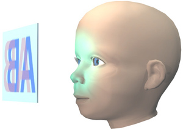

Visió estereoscòpica.
Tècniques de visió en relleu.
Projecció conjunta
Què la caracteritza?
La projecció conjunta es caracteritza per utilitzar una única
pantalla on es visualitzen tant la imatge corresponent a l'ull
dret com la imatge corresponent a l'ull esquerre.
De quins elements consta?
Els elements bàsics d'un sistema basat en projecció conjunta són:
- Una pantalla
: a diferència de la projecció separada, ara no tenim
cap restricció sobre les característiques de la pantalla: podem fer servir
un monitor, un televisor, una pantalla de cinema, una fotografia, etc.
- sistema de separació
: aquest sistema té com a objectiu fer que cada
ull rebi la imatge que li correspon. Donat que ambdues imatges estan
superposades, caldrà fer servir tècniques de separació d'imatges.
Normalment es fan servir ulleres 3D especials que tenen cura que l'ull
esquerre no pugui veure la imatge de l'ull dret i viceversa. Per tal de fer
possible la separació, cada imatge he de tenir quelcom que la diferenciï de
l'altre. La diferència pot ser el temps de visualització (es
visualitzen les imatges per l'ull esquerre i per l'ull dret de forma
alternada, cadascuna durant una fracció de segon), el color (per
exemple, una imatge conté només colors amb component R, i l'altre només
amb components G+B), la direcció d'oscil·lació (els fotons poden
oscil·lar en diferents plans d'oscil·lació), etc. Alguns sistemes fan ús d'una
tècnica anomenada autoestereoscopia, que no requereix l'ús d'ulleres
3D per fer aquesta separació.

On es fa servir?
Aquesta tècnica es fa servir al cinema 3D, als dispositius de realitat
virtual basats en projecció, als jocs 3D...i en general en qualsevol sistema
estèreo en que l'usuari ha de portar qualsevol tipus d'ulleres.
Quines limitacions té?
Les limitacions depenen del tipus de tècnica de separació
utilitzada, que s'estudien més endavant.
Altres comentaris
Aquesta és la tècnica d'estèreo més adient per les aplicacions de
realitat virtual, doncs podem adaptar les característiques de la pantalla
(dimensions, resolució...) a l'aplicació concreta. Si la pantalla és
envolvent (cilíndrica, esfèrica o cúbica), s'aconsegueix el mateix camp de
visió que tenim en la visió natural.